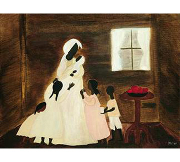
Collection Birmingham Museum of Art , Alabama, ©1994
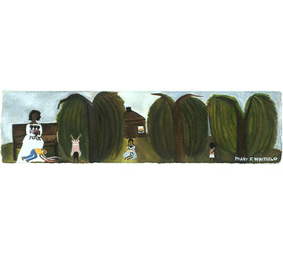
Narrative: Bessie's Handstand, In Memory of my sister Bessie and my brother Greg, watercolor, gouache on Arches paper, 4.75" x 18.75" ©June 2002
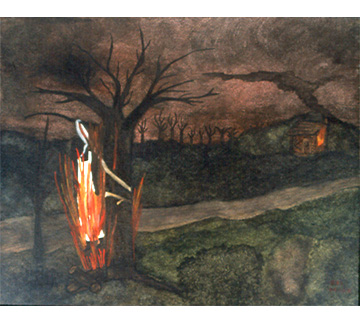
Burning Man (lynching), watercolor on canvas board, 16" x 20" ©1995
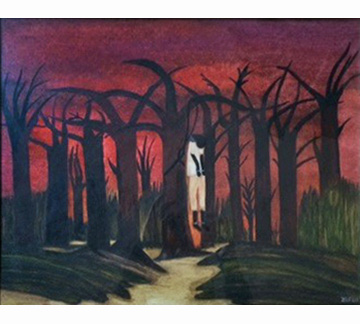
Lynching, watercolor, gouache on canvas board, 16 x 20 inches © 1995
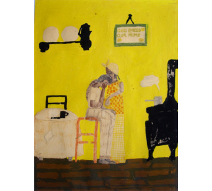
Untitled (Despair), color paints, black ink, crayon, 19.75" x 15" ©circa 1970s
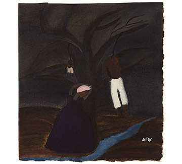
Moses and Baby Sam, watercolor, acrylic on Arches paper, 11.5" x 10.5" ©1999
Photo: Adam Grimshaw.
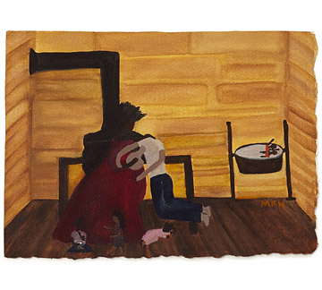
No Job, watercolor on Arches paper, 9" x 11.5" ©1999
Photo: Adam Grimshaw.
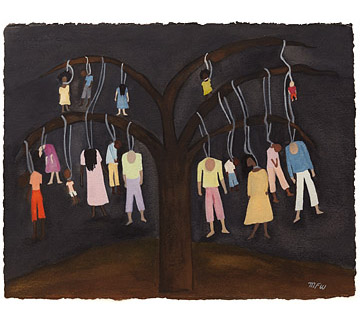
Rainbow of Uneven Colors, watercolor on Arches paper, 15.25" x 19.75" ©2008
Photo: Adam Grimshaw.
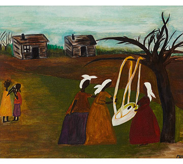
New Baby, watercolor, acrylic on canvas board, 16" x 20" ©1989
Photo: Adam Grimshaw.
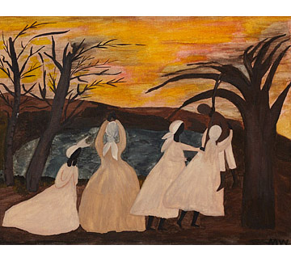
Hanging, watercolor, acrylic on canvas board, 16" x 20" ©1991
Photo: Adam Grimshaw.
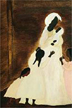
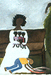
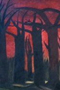
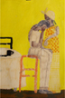
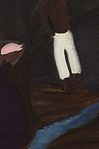
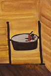
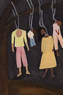
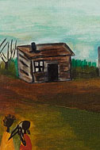
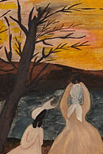